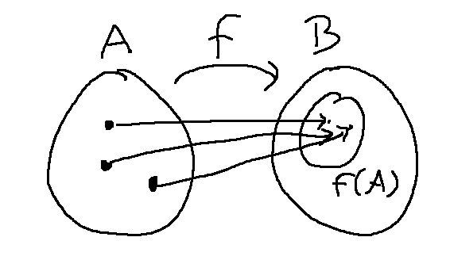
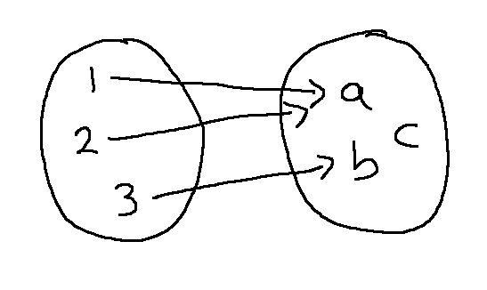

Suppose we have a function \(f: A \rightarrow B\). A is the "domain" and B is the "co-domain".

The "image" of f is the set of all values that f actually produces, if we feed all the input values from A into f. It's often written f(A). The type signature for f requires that output values live in B. So f(A) is always a subset of B. f is "onto" if f(A) is equal to B. That is, f actually produces all the values in B.
\(f: A \rightarrow B\) is onto if and only if
- image = co-domain
We can expand this definition a bit by defining the term "pre-image." A preimage of an element of the co-domain is a value from the domain that maps onto it. For example, in the picture below, 3 is a pre-image of b. Notice that a has two pre-images and c has no pre-images.

\(f: A \rightarrow B\) is onto if and only if
- image = co-domain
- for all y in B, y has a pre-image (i.e. at least one)
And we can expand the definition into even more detail by substituting the definition of pre-image:
\(f: A \rightarrow B\) is onto if and only if
- image = co-domain
- for all y in B, y has a pre-image
- for all y in B, there is an x in A such that f(x) = y
The first version is most useful for undertanding the concept. The last version gives us an explicit pattern for writing a proof.
Notice that the definition of "onto" starts with two quantifiers that are different: the first is universal and the second is existential. With mismatched quantifiers like this, the order matters. Consider this example:
(a) There is a dining hall where all the students eat.
(b) Every student has a dining hall where he eats.
When interpreting sequences of quantifiers, we pick values reading left to right. In sentence (a), we first pick a dining hall D and this choice of D has to work for all students that we might select. This might be true at a small college that has only one dining hall.
In sentence (b), we pick the student first and then we pick the dining hall. So our choice of dining hall can depend on the student. So (b) will be true for a lot more schools, because it's ok to have some students eating at one dining hall and some eating at a different one.
You can think of these "nested" quantifiers as a type of game. When you read left to right, you get to pick values for existential quantifiers and your adversary picks the ones for universal quantifiers. So, in the dining hall example, your job is much easier if you get to pick second, after you've seen what your adversary is choosing.
Now, consider this claim:
Let \(f: \mathbb{Z}^2 \rightarrow \mathbb{Z}\) such that \(f(x,y) = 2x + 3y\)
Claim: f is onto.
Proofs of "onto" are typically constructed backwards, and then rewritten into forwards order. We need to sort-of invert the function f. By "sort of," I mean that we don't need a real inverse function but we just need a way to construct pre-images.
Scratch paper
How to get 7 as output? input (2,1)
How to get 1 as output? input (-1,1) or (2, -1) or ...
How to get k as output? input (-k, k) or (2k, -k)
For our proof, we only need a single way to pick a pre-image for each output value k. So let's use (-k, k)
Our final proof outline mirrors the definition of "onto": "for all y in B, there is an x in A such that f(x) = y". Oh, but the inputs to our function have the form (x,y). So let's rewrite this with variable names that match up with our function definition:
For all k in B, there is an (x,y) in A such that f(x,y) = k.
To write the proof in proper logical order, we choose an arbitrary value for the output value (k). We then pull the corresponding input value out of thin air, and then explain to the reader why it's a pre-image of k. So it looks like this:
Proof: Let \(k \in \mathbb{Z}\).Consider \((-k,k) \in \mathbb{Z}^2\).
\(f(-k,k) = 2(-k) + 3k = k\). So (-k,k) is a pre-image of k.
Since k was arbitrarily chosen, this means that every value k has a pre-image. So f is onto.
We're able to pull the pre-image out of thin air because of the preliminary work that we did on our scratch paper. Onto proofs are often relatively simple, but it's important to realize that they involve backwards scratch work that doesn't appear in the final formal proof.